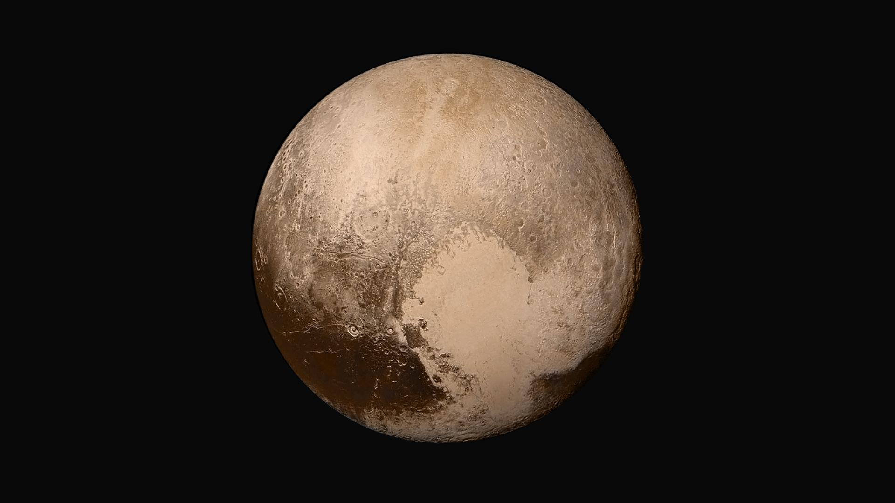
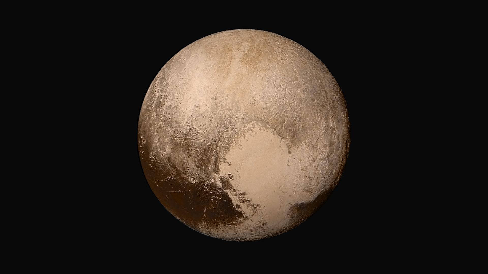
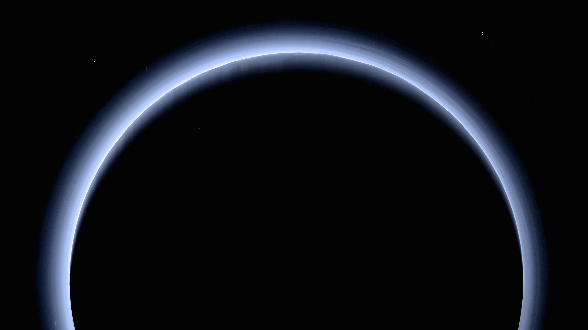
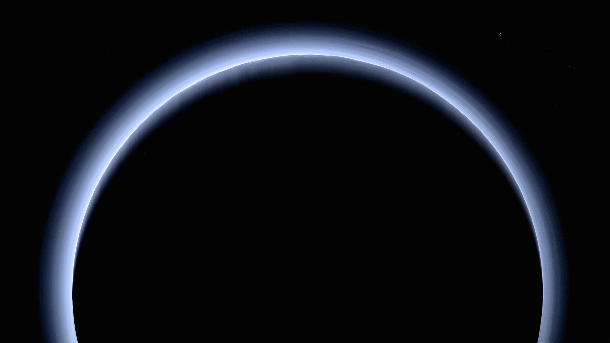

Wandering Beyond Blue Yonder

Dwarf Planets

 



 



Four images from NASA's New Horizons' Long Range Reconnaissance Imager (LORRI) were combined with color data from the Ralph instrument to create this global view of Pluto. (The lower right edge of Pluto in this view currently lacks high-resolution color coverage.) The images, taken when the spacecraft was 280,000 miles (450,000 kilometers) away, show features as small as 1.4 miles (2.2 kilometers), twice the resolution of the single-image view taken on July 13.
New Horizons scientists use enhanced color images to detect differences in the composition and texture of Pluto’s surface. When close-up images are combined with color data from the Ralph instrument, it paints a new and surprising portrait of the dwarf planet. The “heart of the heart,” Sputnik Planum, is suggestive of a source region of ices. The two bluish-white “lobes” that extend to the southwest and northeast of the “heart” may represent exotic ices being transported away from Sputnik Planum.
This composite image shows a sliver of Pluto's large moon, Charon, and all four of Pluto's small moons, as resolved by the Long Range Reconnaissance Imager (LORRI) on the New Horizons spacecraft. All the moons are displayed with a common intensity stretch and spatial scale (see scale bar). Charon is by far the largest of Pluto's moons, with a diameter of 751 miles (1,212 kilometers). Nix and Hydra have comparable sizes, approximately 25 miles (40 kilometers) across in their longest dimension above. Kerberos and Styx are much smaller and have comparable sizes, roughly 6-7 miles (10-12 kilometers) across in their longest dimension. All four small moons have highly elongated shapes, a characteristic thought to be typical of small bodies in the Kuiper Belt. The Johns Hopkins University Applied Physics Laboratory in Laurel, Maryland, designed, built, and operates the New Horizons spacecraft, and manages the mission for NASA's Science Mission Directorate. The Southwest Research Institute, based in San Antonio, leads the science team, payload operations and encounter science planning. New Horizons is part of the New Frontiers Program managed by NASA's Marshall Space Flight Center in Huntsville, Alabama.
A pair of small moons that NASA's Hubble Space Telescope discovered orbiting Pluto now have official names: Nix and Hydra. Photographed by Hubble in 2005, Nix and Hydra are roughly 5,000 times fainter than Pluto and are about two to three times farther from Pluto than its large moon, Charon, which was discovered in 1978.
This is the highest-resolution color departure shot of Pluto's receding crescent from NASA's New Horizons spacecraft, taken when the spacecraft was 120,000 miles (200,000 kilometers) away from Pluto. Shown in approximate true color, the picture was constructed from a mosaic of six black-and-white images from the Long Range Reconnaissance Imager (LORRI), with color added from a lower resolution Ralph/Multispectral Visible Imaging Camera (MVIC) color image, all acquired between 15:20 and 15:45 UT -- about 3.5 hours after closest approach to Pluto -- on July 14, 2015. The resolution of the LORRI images is about 0.6 miles (1 kilometer) per pixel; the sun illuminates the scene from the other side of Pluto and somewhat toward the top of this image.
This artist's rendering shows NASA's Dawn spacecraft maneuvering above Ceres with its ion propulsion system. Dawn arrived into orbit at Ceres on March 6, 2015, and continues to collect data about the mysterious and fascinating world.
This frame from an animation shows dwarf planet Ceres overlaid with the concentration of hydrogen determined from data acquired by the gamma ray and neutron detector (GRaND) instrument aboard NASA's Dawn spacecraft.
This pair of images shows color-coded maps from NASA's Dawn mission, revealing the highs and lows of topography on the surface of dwarf planet Ceres.
This orthographic projection shows dwarf planet Ceres as seen by NASA's Dawn spacecraft. The projection is centered on Occator Crater, home to the brightest area on Ceres. Occator is centered at 20 degrees north latitude, 239 degrees east longitude.
This enhanced color image of Ceres' surface was made from data obtained on April 29, 2017, when NASA's Dawn spacecraft was exactly between the sun and Ceres. Dawn's framing cameras took images of Ceres with a clear filter as well as five different color filters.
Top Three Reasons We picked Our Topic
- A
- B
- C